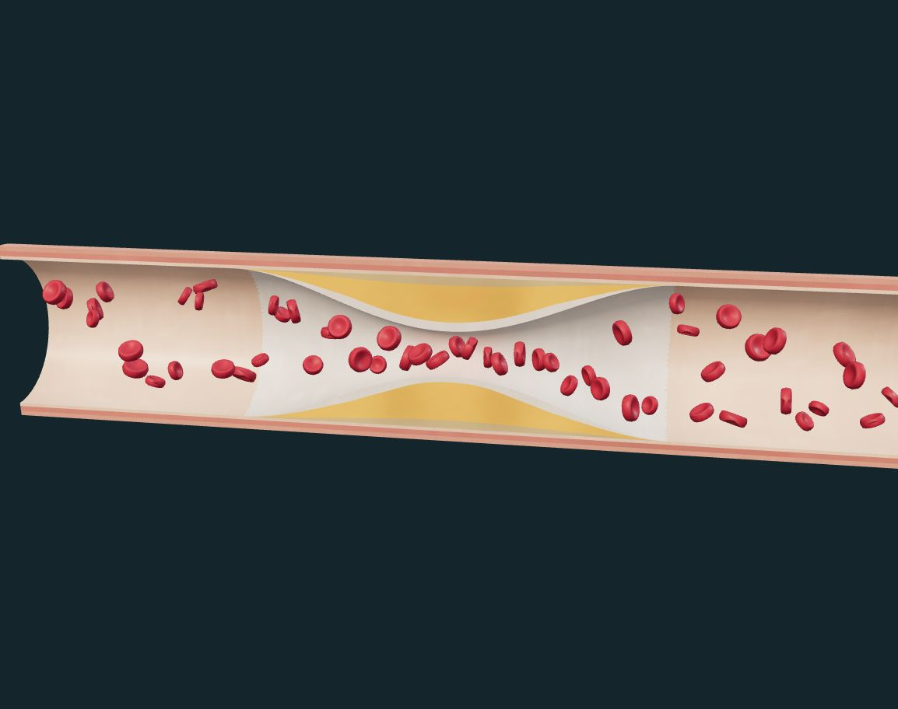

STRESS TEST ／ 心臟壓力檢查
休息時沒有明顯異常，也可以透過壓力檢查，觀察心臟供血的變化。
數字為研究概估，會因受檢者條件與檢查方式而異；結果仍須搭配症狀與風險判讀。
運動時，心肌需要更多氧氣。
加入壓力，看看正常分支和狹窄分支的血流，會有什麼不同。
02 ／ 3D互動動畫
看見斑塊、導管與支架的關係；可隨時暫停、旋轉與切換章節。

完整心臟 → 冠脈聚焦 → 導管與支架
03 ／ 住院須知
依序閱讀，也可以直接選擇想了解的主題。
心臟科 凌旺業醫師 關心您的健康
實際治療方式依病情、檢查結果及醫病討論決定。